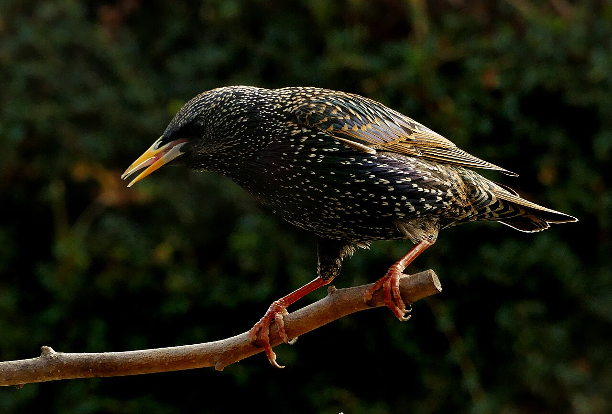

Sturnus vulgaris — Identification, habitats, breeding and occurrence in the Arab region
Identity and identification
The Common Starling, Sturnus vulgaris, belongs to Sturnidae. About 21 cm long, it has a compact body, short tail, slender bill and pointed wings in flight. Adult plumage is dark with green and purple iridescence. Fresh feathers carry pale spots that become less conspicuous as their tips wear; a dark, sparsely spotted bird is not automatically another species. The bill is yellow during breeding and darker outside that period. Juveniles are grey-brown before acquiring spotted plumage. The sexes broadly resemble one another, and subtle differences require a good close view.
Similar species
The short tail, wing shape and walking gait help separate starlings from longer-tailed blackbirds. In the Maghreb, compare carefully with Spotless Starling, Sturnus unicolor: absence of spots alone is insufficient, especially in worn plumage. Adult Rosy Starlings combine pink and black, but juvenile birds require closer attention to bill, feather pattern and proportions.
Habitat, food and behaviour
Pasture, lawns, cultivated fields, orchards, parks and urban areas all provide opportunities. Starlings walk while searching for invertebrates and probe the ground with their bills; they also eat fruits, seeds and other available foods. Their varied diet does not make them invariably beneficial or harmful to every farm. Outside breeding, flocks may roost communally in reeds, trees or suitable structures. Coordinated flock movements arise from birds responding to their neighbours rather than moving randomly. The complex song incorporates whistles, rattles and imitations.
Breeding and development
Nests occupy holes in trees, buildings and suitable nest boxes. A typical clutch contains 4–5 pale blue eggs, with incubation lasting about 12–15 days. Both parents feed the chicks, which leave the cavity after roughly three weeks, with variation. Growing young rely heavily on protein-rich animal food. A later or replacement brood is possible, but not universal across populations. Independent juveniles gather into flocks and develop more adult-like plumage through moult.
Migration and Arab-region seasons
This is a partial migrant, with resident populations and others moving south or west in autumn. Winter numbers become substantial in Mediterranean parts of the Arab world, followed by a reduction as visitors leave in spring. This does not imply that the species never breeds in Arab countries: breeding populations occur in northern Iraq. In Saudi Arabia, winter occurrence is concentrated in the northern half, with conspicuous Eastern Province flocks and much scarcer occurrence farther south; it is not treated there as a breeding species. Abundance varies among farmland, towns and roosts, and between years. A single flock cannot establish population size or a universal seasonal calendar. In Lebanon, autumn passage is conspicuous in October–November, with winter flocks concentrated in open and cultivated Beqaa habitats. At a documented Moroccan daya wetland site, October–February winter records included birds mixing with resident Spotless Starlings; these dates describe that site rather than the entire country.
Ecology and conservation
Starlings consume invertebrates, disperse some seeds and provide food for raptors. Globally they are Least Concern, but substantial declines in parts of Europe show that spectacular flocks do not remove the need for monitoring. Loss of suitable pasture, changing farming practices and reduced food availability are studied pressures. The species is introduced outside its native range in several regions; this label should not automatically be applied to natural visitors in Arab countries. Quiet observation should keep its distance from nests and communal roosts and distinguish demonstrated local problems from a blanket reputation.
References
Cornell Lab — All About Birds: European Starling identification
Audubon — European Starling field guide
BTO — BirdFacts: Starling
The Birds of Saudi Arabia, volume 2 — Common Starling
OSME — Region List 10.2, passerines
Minnesota Department of Natural Resources — European Starling
BirdLife International — African-Eurasian flyway species listings
Ramadan-Jaradi and colleagues — Updated checklist of the birds of Lebanon, 2020
Go-South Bulletin 14, 193–204 (2017) — Moroccan site avifauna
Photo: Bernard Spragg. NZ — CC0 1.0.